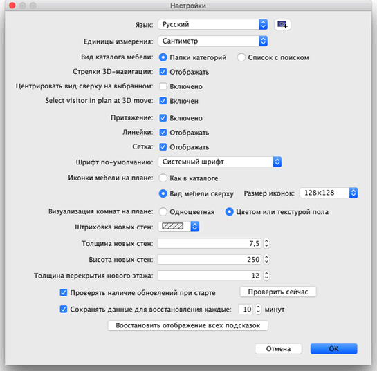

Для редактирования настроек Sweet Home 3D, выберите Sweet Home 3D > Настройки... в среде OS X или Файл > Настройки... в других системах.

В панели настроек Вы можете выбрать Язык, используемый в интерфейсе Sweet Home 3D и Единицы измерения, используемые для обрисовки и измерения в программе.
Радио кнопки Папки категорий и Список поиска позволяют настроить вид каталога мебели для каждого Sweet Home 3D окна.
Флаг Стрелки 3D навигации включает видимость стрелок для навигации по трехмерному представлению.
Магнетизм - галочка включает или выключает магнетизм при обрисовке стен и растановке фурнитуры.
Линейки - галочка включает и выключает вспомогательные линейки на плане.
Сетка - галочка включает и выключает показ сетки на плане.
Каталог изображений и радио-кнопки Вид сверху позволяют Вам выбирать, как мебель должна быть расставлена на плане (см. изображения ниже).
Радио-кнопки Монохромный и Цвет или структура пола позволят Вам выбрать, должны ли отображаться полы комнат на плане в цвете и со структурой, которую Вы выбрали, или серого цвета (при печати - белый).
Выпадающий список Образец стен на плане позволяет Вам выбрать образец отображения стен на плане.
Толщина новых стен - значение толщины для новых стен на плане.
Высота новых стен - значение высоты для новых стен на плане.
 |
|
 |
Предоставление плана вид сверху с изображениями
мебели из каталога, монохромным полом
и стенами заполненными образцом по умолчанию |
Предоставление плана вид сверху с изображениями
мебели из каталога, цветным полом
и стенами черного цвета |
|